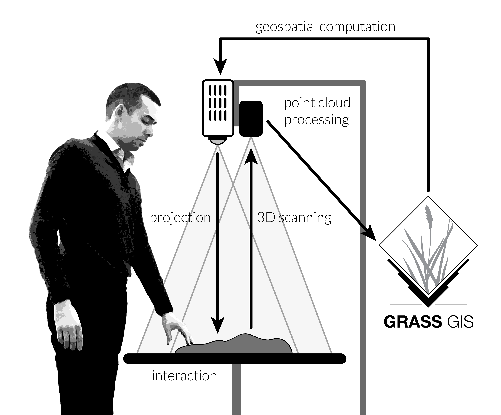
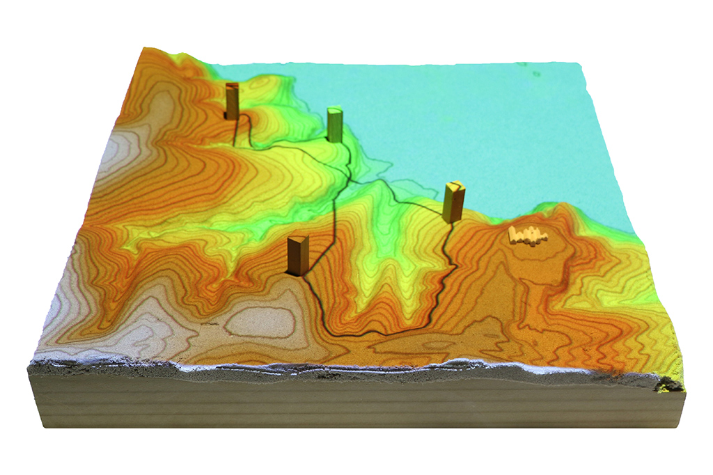
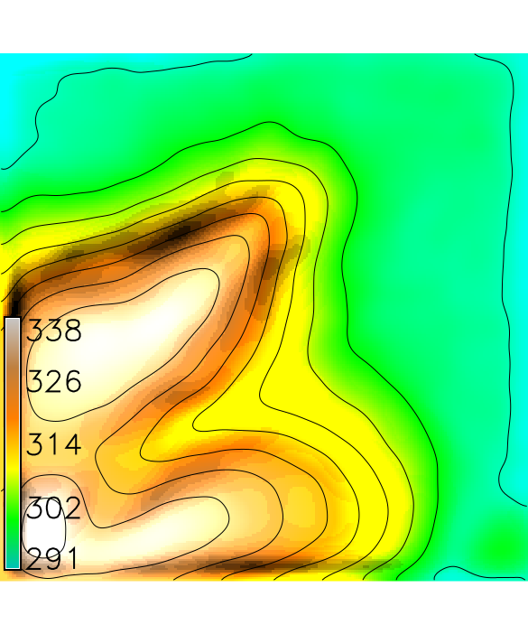
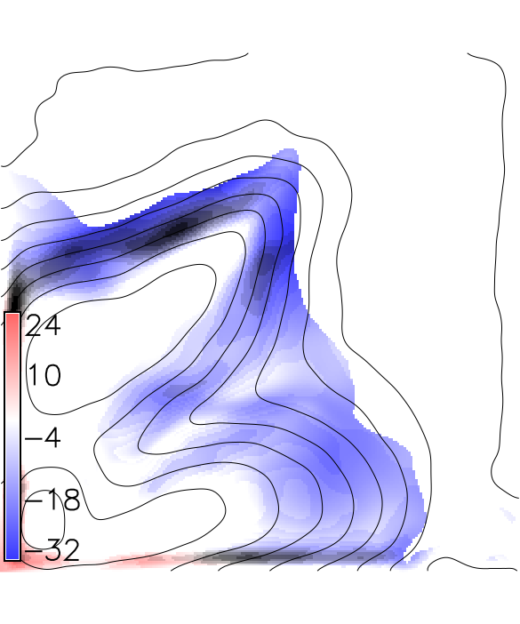
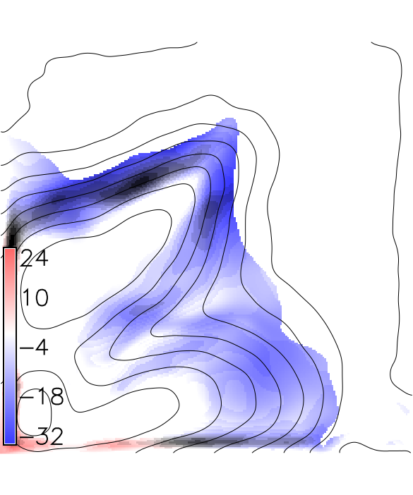

Brendan Harmon
Spatial thinking
`the mental processes of representing, analyzing, and drawing inferences from spatial relations'
Uttal, D. H., Miller, D. I., & Newcombe, N. S. (2013). Exploring and Enhancing Spatial Thinking: Links to Achievement in Science, Technology, Engineering, and Mathematics? Current Directions in Psychological Science, 22(5), 367–373. doi:10.1177/0963721413484756
Spatial thinking
Used pervasively in everyday life for tasks like
- recognizing things,
- manipulating things,
- interacting with others,
- and way-finding
Spatial thinking in science, technology, engineering, and math
Used in diverse tasks including
- diagramming concepts,
- visualizing data,
- simulating processes,
- and building structures
Spatial thinking in art and design
Used in tasks including
- sketching,
- form-finding,
- and critical analysis
Spatial computation
Used to efficiently store, model, and analyze large sets of spatial data in order solve complex spatiotemporal problems
Human-computer interaction
Graphical user interfaces
Parsing spatial data presented graphically requires sophisticated reasoning such as
- mental rotation,
- spatial visualization,
- and spatial perception
Embodied cognition
Cognitive processes can be offloaded onto the body and physically simulated
Ex: Physically simulating mental rotation
Tangible interfaces for GIS
Physically manifest geospatial data so that we can cognitively grasp and absorb it

Tangible Landscape
A tangible interface for GIS
History


An evolution of Illuminating Clay and the Tangible Geospatial Modeling System
Image source: MIT Media Lab
Tanigble interaction with GIS
With Tangible Landscape you can hold a GIS in your hands - feeling the shape of the earth, sculpting its topography, and directing the flow of water.
How-it-works
Tangible Landscape couples a digital and a physical model through a continuous cycle of 3D scanning, geospatial modeling, and projection
Intuitive scientific modeling


Tangible Landscape is designed to make scientific models exploratory, engaging, and fun
by enabling a rapid iterative process of observation, hypothesizing, testing, and inference
Geodesign

Designing performance landscapes
through an iterative cycle of ideation, geospatial modeling, and critique
Applications
Visibility analysis
Applications


Solar analysis
Solar irradiation and cast shadow
Applications


Trail planning
Optimized trail routing between waypoints based on energetics, topography, and cost maps with feedback including trail slopes and viewsheds
Scientific gaming


Coastal flooding game
Save houses from coastal flooding by building coastal defenses
Structured problem solving with rules, challenging objectives, and scoring
Scientific gaming


Termite infestation game
Manage the spread of termites across a city by treating city blocks
Explore the behavior of an epidemiological model through serious gaming
Research questions
- How can we design an effective tangible interface for GIS?
- Can coupling a physical and digital model of topography improve spatial performance?
- How do different geospatial analytics mediate users' spatial performance when using a tangible interface for GIS?
Coupling experiment


Can coupling a physical and digital model of topography improve spatial performance?
A comparative study of 3D spatial performance with 1. digital modeling, 2. hand modeling, and 3. projection augmented modeling
Mean elevation

1. reference, 2. digital modeling, 3. hand modeling, and 4. projection augmented modeling
Mean difference in elevation
 

1. reference, 2. digital modeling, 3. hand modeling, and 4. projection augmented modeling
Mean difference in slopes
1. reference, 2. digital modeling, 3. hand modeling, and 4. projection augmented modeling
Mean difference in water depth

1. reference, 2. digital modeling, 3. hand modeling, and 4. projection augmented modeling
Mean difference in ridges
1. reference, 2. digital modeling, 3. hand modeling, and 4. projection augmented modeling
Cut-fill experiment
Building a terrain model in polymer-enriched sand using Tangible Landscape's differencing analytic (i.e. cut and fill) as a real-time guide.
Blue means add more sand. Red means remove sand.
Cut-fill experiment

How does the difference analytic (ie. cut-fill) mediate users' spatial performance with a tangible interface for GIS?
Mean elevation
1. reference and 2. cut-fill analytic
Mean difference in elevation
1. reference and 2. cut-fill analytic
Water flow experiment
How does the water flow analytic mediate users' spatial performance with a tangible interface for GIS?
Mean water depth
1. reference and 2. water flow analytic
Mean difference in water depth
1. reference and 2. water flow analytic
Findings
- This method of digital modeling tended to produce abstract approximations of the form
- Hand modeling tended to produce rough, exaggerated models that represented many morphological features
- Projection augemented modeling tended to produce relatively accurate models that better represented slope, water flow, and morphological features
- The cut-fill analytic tended to produce very accurate models
- The water flow analytic tended to produce accurately modeled stream channels, but more approximate topography elsewhere
Observations
- The cut-fill analytic enabled participants to generatively shape form and critically assess the results in an iterative cycle
- The water flow simulation enabled an iterative cycle of form-finding and critical assessment that helped participants to learn how form controls process
Conclusions
- Tangible Landscape encourages metacognitive processes
- Tangible Landscape can increase users' spatial performance in different ways depending upon the analytics choosen
- Tangible Landscape can help users link process to form
Implications
- The cut-fill and water flow analytics could be used to teach grading and geomorphology
Publications
- Harmon, B. A., Petrasova, A., Petras, V., & Mitasova, H. (2016). Computational Landscape Architecture: Procedural, Tangible, and Open Landscapes. In J. R. Anderson & D. Ortega (Eds.), Innovations in Landscape Architecture. Routledge.
- Harmon, B. A., Petrasova, A., Petras, V., Mitasova, H., & Meentemeyer, R. K. (2016). Tangible Landscape: cognitively grasping the flow of water. In The International Archives of the Photogrammetry, Remote Sensing and Spatial Information Sciences. Prague: International Society of Photogrammetry and Remote Sensing.
- Harmon, B. A. (2016). Embodied Spatial Thinking in Tangible Computing. In TEI ’16: Proceedings of the Tenth International Conference on Tangible, Embedded, and Embodied Interaction (pp. 693–696). Eindhoven, Netherlands: ACM Press. http://dx.doi.org/10.1145/2839462.2854103
- Petrasova, A., Harmon, B., Petras, V., & Mitasova, H. (2015). Tangible Modeling with Open Source GIS. Springer International Publishing. http://dx.doi.org/10.1007/978-3-319-25775-4
- Petrasova, A., Harmon, B. A., Petras, V., & Mitasova, H. (2014). GIS-based environmental modeling with tangible interaction and dynamic visualization. In D. P. Ames & N. Quinn (Eds.), Proceedings of the 7th International Congress on Environmental Modelling and Software. San Diego, California, USA: International Environmental Modelling and Software Society.
Presentations
- Petrasova, A., Petras, V., Harmon, B. A., & Mitasova, H. (2016, May 2). Using GRASS GIS through Python and tangible interfaces. Workshop conducted at FOSS4G North America 2016, Raleigh, NC.
- Harmon, B. A., Petrasova, A., Petras, V., Mitasova, H., & Meentemeyer, R. K. (2016, May 3). Tangible interaction for GIS. Presented at FOSS4G NA 2016, Raleigh, NC.
- Harmon, B. A., Petrasova, A., Petras, V., Mitasova, H., & Meentemeyer, R. K. (2016, April 1). Creative spatial thinking with Tangible Landscape. Presented at American Association of Geographers Annual Meeting 2016, San Francisco, CA.
- Harmon, B. A., Mitasova, H., & Petrasova, A. (2014, January 30). Tangible geospatial modeling for landscape architects. Presented at 2014 Geodesign Summit, Redlands, CA.
Future work
Cognitive science experiments to study metacognition and learning with Tangible Landscape
Future work
In-situ digital fabrication
A 3-axis CNC milling machine to model a landscape in polymer-enriched sand using a plunge cut
Future work
In-situ robotic fabrication for Tangible Landscape
Future work
Virtual reality for Tangible Landscape
Future work
Real-time data and autonomous construction with Tangible Landscape